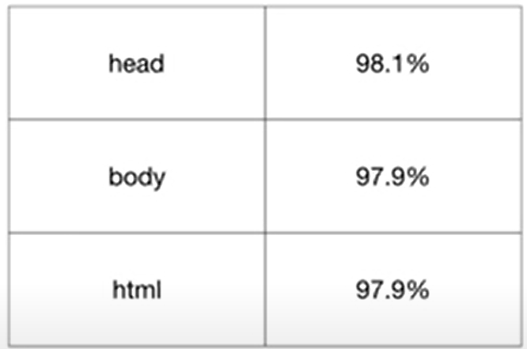

- HTML
- CSS
- JavaScript
HTML
HTML의 기본적인 4가지 태그
위에서 볼 수 있는 html제목의 태그는 보통 h1부터 h6까지 태그를 나눌 수 있으며
이는, 제일 큰 대제목 h1부터 제일 작은 소제목인 h6까지
차례로 제목의 크기가 작아진다.
strong 태그는 글자를 강조표시하는
태그라고 볼 수 있다.
또한 U 태그는 밑줄을 치게 만든다
여기서 우리가 또 알 수 있는 태그가 두개 있다.
하나는, br태그라는 것인데
br태그는 줄바꿈을 하게끔 도와주는 태그이며
또 하나는
문단을 나눌 수 있도록 도와주는 p태그라는 것이다.
여기서 br태그는 중요한 점이 두개 있는데,
바로 다른 태그들과 다르게 열리는 태그와 닫히는 태그가
따로 없이,
단순히 하나의 태그로만 이루어져있다는 점이다.
또한, br태그는
하나를 쓰던 두개를 쓰던 더 많이 쓰던 상관 없지만
여러개를 쓰면 쓸 수록 간격이 더 벌어진다.
여기서 br태그와 p태그를 비교했을 때, p태그는 단점이 있다.
줄바꿈을 많이 하고
싶다면 br태그를 여러번 사용하면 되지만,
< p태그는 정해져있는
여백만큼만 벌어지기 때문에 시각적으로 자유도가 좀 떨어진다.
그래서 우리는 CSS라는 프로그래밍 언어를 배워야하는 것이다.
이렇게 우리는 네가지 태그인
1. 제목과 순차적인 크기를 나타내는 h1~h6 태그
2. 글씨를 강조표시하는 strong 태그
3. 줄바꿈을 도와주는 br 태그
4. 문단을 나눌 수 있도록 하는 p태그
들을 배워보았다.
속성과 img태그
이제 우리는 속성이라고 하는 태그의 심화된 문법과 img를 공부 할 것이다.
이미지를 웹페이지에 포함시킬때 사용하는 태그의 이름은
img 이다.
그런데 단순히, img만 쓴다고 사진이 삽입이 되는 것이 아니다.
img 에다가 어떤 이미지인지 알려주도록
약속된 속성 source=""(약자 src="")를
(img source또는src="")식으로 적고
따옴표 사이("")에다가 원하는 이미지의 주소를 적어준다.
그러면 웹브라우저는 이미지로써 표현을 시켜준다.
그런데 이미지의 파일이 너무 크다고 판단이 될 경우에는
약속된 속성 (img source또는src="")에 추가로 또 다른 속성인
width=""를
(img source또는src="" width="")식으로 적고
width의 따옴표 사이("")에다가 사진의 크기(대략 450또는 100%)를
적어준다.
즉 (img src="coding.jpg" width="100%")에서
굵게 표시된 이 부분들을 속성,
영어로 Attribute 라고 하는 것이며
속성은
(img width="100%" src="coding.jpg"
이렇게 위치는 아무런 상관이 없으며 아무 위치에나 사용할 수 있다.
즉, 속성이란
태그가 태그의 이름만으로 정보가 부족할 때에
속성을 통해서 더 많은 의미를 부가할 수 있게 된 것이다.

부모,자식태그
1. li,ul,ol 태그
태그가 서로 포함관계로 연관되어 있을 때 포함하고 있는 태그를
부모태그, 포함된 태그를 자식태그라고 한다.
(parent)
(child)(/child)
(/parent)
이런 형식이라고 생각하면 된다.
목차를 만드는 법 = (li)abcdef(/li)
li태그의 부모인 ul태그가 등장한다.
ul태그란 li태그의 부모태그이자,
li와 같은 항목들이 어디서부터 어디까지 연관된 항목인지 경계를 짓기 위한,
Grouping을 하기 위한 부모태그가 필요한 것이다.
그래서 li태그는 부모태그인 ul을 갖고 있으며, 반대로 ul태그는 반드시 자식태그인
li태그를 가지고 있다는 것을 기억해야 한다.
추가로 ul태그를 사용할 경우에는,
리스트의 앞 부분에 숫자 대신 항목화 하는 점이 따라온다.
그렇다면, 항목화 하는 점 대신 숫자를 붙이기 위해선 어떤 태그가 필요할까?
바로, li태그의 또 다른 부모태그로 등장하는 ol태그이다.
ol태그는 li태그로 인해 리스트화 되어 있는 항목들의 순서를
자동으로 넘버링 되게 하는 역할이다
즉, ul이라는 태그와 ol이라는 태그는 공통적으로 l을 가지고 있다.
이, l의 약자는list이며
ol은 Ordered List의 약자이다.
반면, ul은 부정을 뜻하는 un이 들어간 unordered list의 약자이다.
2. table,tr,td 태그
또 다른 부모자식태그로는 표를 작성는 table태그가 존재한다.
이 table태그의 경우에는 총 3가지가 같이 다니는 태그로 구성되어 있는데
(table)
(tr)
(td)abcd(/td)
(td)~~%(/td)
(/tr)
(tr)
(td)efgh(/td)
(td)~~%(/td)
(/tr)
(tr)
(td)ijkl(/td)
(td)~~%(/td)
(/tr)
(/table)
이러한 형식으로 구성되어 있다.
즉, 이를 활용하여 표를 만들 수 있는 것인데, 아래에 표를 작성해보도록 하겠다.
| head |
98.1% |
| body |
97.9% |
| html |
99.1% |

즉, 위와 같이 표가 만들어지는 것이다.
이 구성에 대해서 자세히 설명하자면 다음과 같다.
표를 작성하기 위해 제일 머리와 꼬리가 되는 태그는 table 태그이며
테이블의 행을 구분 짓는 태그는 tr태그로
tr태그 속에 td태그를 사용함으로써 왼쪽 열부터 순서대로 내용을 채워 나가는 것이다.
이렇게 tr태그 속에 td태그를 다 채웠다면,
그 다음 새로운 tr태그를 시작함으로써
또 다른 행을 점점 채워나가고,
마찬가지로 td태그를 그 속에 또 추가함으로써 열도 채워 나가는 것이다.
이러한 과정을 다 거치고 표가 완성되고 나면 마지막에 table 태그로
닫아주면서 표를 완성시키는 것이다.
문서의 구조와 슈퍼스타들
1. 제목을 표시하는 방법 - title태그를 사용
title태그는 인터넷 창의 제목으로 표시가 되는데,
이 title태그는 웹페이지의 제목을 사용자에게 명시적으로 알려줄 수 있을 뿐만 아니라
검색엔진과 같은 기계들은 이 title이라는 것을 책으로 치면 책 표지와 같은 정보로서 사용한다.
2. 웹페이지에서 문자가 깨지는 경우를 방지
에디터로 작성한 파일을 웹브라우저를 통해 열 때,파일에 작성한 문자와 실제로 출력되는 문자가
다른 경우를 종종 마주칠 때 있다. 이는, 컴퓨터가 문자를
utf-8과 같은 여러가지 입력체계의 약속을 정하고 있기 때문이다.
만약 에디터로 편집할 때, 우리가 utf-8이라는 입력체계로 작성을하고 저장을 했다면,
컴퓨터도 웹브라우저에서 파일을 utf-8로 열어야 문제가 생기지 않는 것이다.
그래서 우리는 웹브라우저에게 어떠한 웹 페이지를 열 때는 utf-8로 열어라는
명령을 하기 위해 다음 문장처럼 사용하면 된다.
(meta charset="문자체계(utf-8 등등")
위 문장에서 charset은 캐릭터셋이라고도 부르며
char = 문자
set = 규칙
즉, ~~형식으로 문서를 읽어라고 브라우저에게 얘기를 해주는 것이다.
3. 본문을 설명하는 head와 본문 body그리고 html
html의 제일 위에 항상 위치해 있는
본문의 제목이 무엇인지 설명하는 title태그와
본문이 어떤 입력 방식으로 저장되어 있다고 설명하는 meta charset="~~"태그
이 두 태그는 모두 본문(body)이 무엇인지 설명하는 부분으로써
(head)(/head) 태그를 사용해 주기로 약속한 것이다.
그 다음 등장하는 본문이라고 볼 수 있는 모든 부분들은
(body)(/body) 태그를 사용해 주어야 한다.
즉, html에 있는 모든 태그는 head 태그 또는 body 태그 둘 중 하나 아래에 놓이게 되는 것이다.
그렇기에 head, body태그는 고위직 태그라고 말할 수 있다.
마지막으로, 이 고위직 태그인 head,body까지 감싸는 단 하나의 최고위층 태그가 있는데
이것이 바로 (html)(/html)이라는 태그이다.
그리고, 이 html 태그 위에 "이 문서는 html이다"라는 것을 설명해주기 위해
관용적으로 (!doctype html)이라고 써주면 된다.
HTML 태그의 제왕
1. 링크를 의미하는 'a'태그
a태그는 배가 정박할 때 사용하는 닻을 의미하는
'anchor'의 첫글자를 딴 것이다.
즉, ''정보의 바다에 정박하다'라는 의미로 사용되기 시작한 것이다.
2. 'a' 태그와 그의 속성 href=""
그렇다면, 이제 아래 HTML단어에 이 용어의 정의를 설명하는 페이지로
옮겨 갈 수 있는 링크를 걸어보도록 하겠다.
HTML
위에 HTML글자를 클릭하면, 그 용어를 설명하는 페이지로 넘어가는 것을 볼 수 있다.
여기서, 우리는 (a herf="주소")(/a)태그를 사용하여
설명하고 싶은 단어를 감싸주면 되는 것이다.
(a href="주소")링크를 걸어주고 싶은 단어(/a)
위의 형식처럼 말이다.
그렇다면 a가 링크를 의미하는 태그라면, a의 옆에 있는 href의
의미는 무엇일까?
이는 다른 태그들과 마찬가지로 a태그에 대한 속성이며
h = 링크를 의미하는 Hypertext의 앞글자 h
ref = 참조, 주소를 의미하는 refrence의 앞글자 ref
즉, 링크에게 이 값을 참조해야 한다는 의미로
이 두개를 합쳐 href이라는 속성이 나오게 된 것이다.
3. 'a' 태그의 두번째 속성 target="_blank"
만약 링크를 클릭했는데 새로운 탭에서 열리도록 만들고 싶다면
target="_blank"이라는 속성을 사용하면 된다.
4. 'a' 태그의 세번째 속성 title="링크를 설명해주는 말"
만약 링크를 클릭하기 전에, 그 링크가 무엇인지 툴팁으로 알고 싶다면
title="링크를 설명해주는 말"이라는 속성을 사용하면 된다.
웹사이트 완성
웹사이트를 완성하기 위해서는 페이지를 만들어 주고 싶은 부분에 a태그를 사용하여
링크를 걸어주면 된다.
새로운 사이트를 만들고 싶으면 에디터 왼쪽의 프로젝트에서 새로운 파일을 열면 된다.